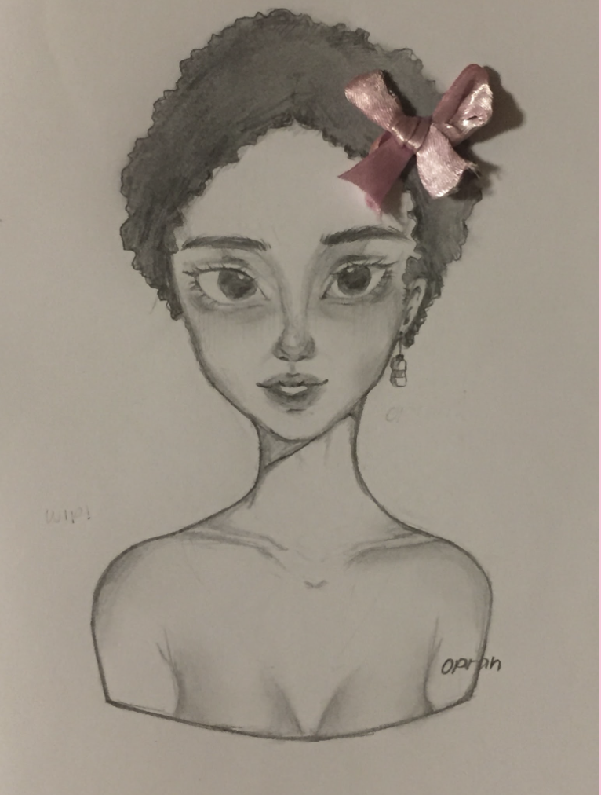

In this peice, I used a sketchbook and mechanical pencil. I wanted to work with drawing simple backgrounds, so this was my first piece where I practiced that.

A filtered photo of a fake plant in my house.
My very first self-portrait.

A digital drawing I did, inspired by IU's "BIBIBI"
A filtered photo of an origami crown I took for a project.